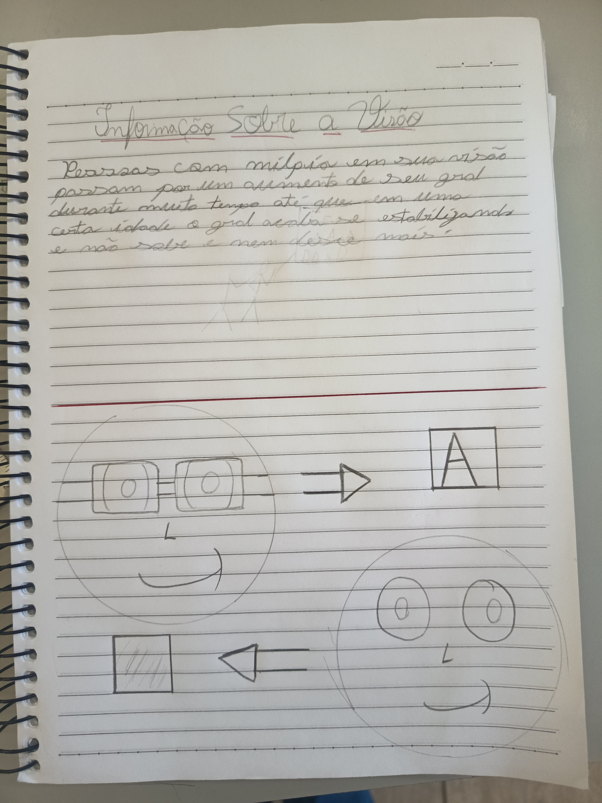
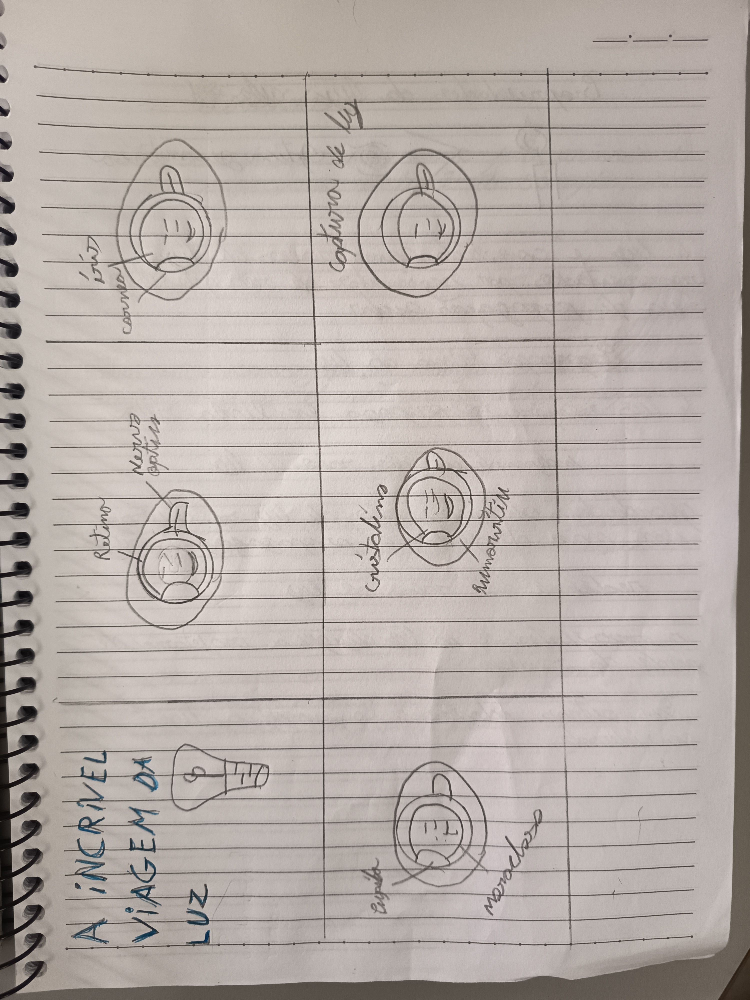
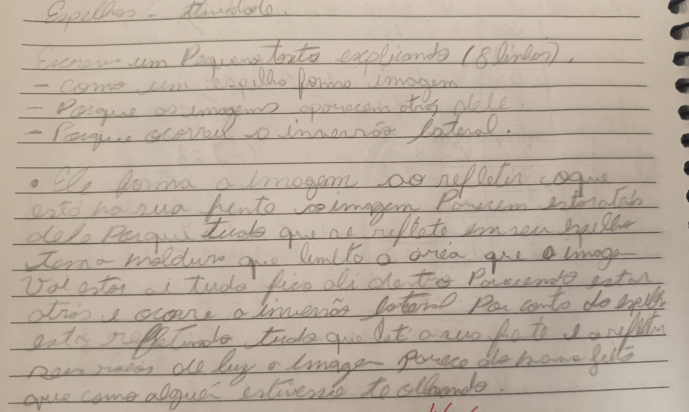
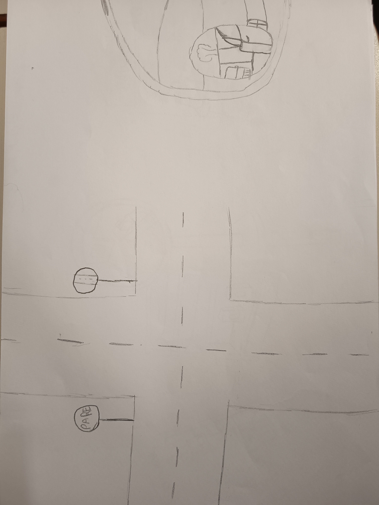
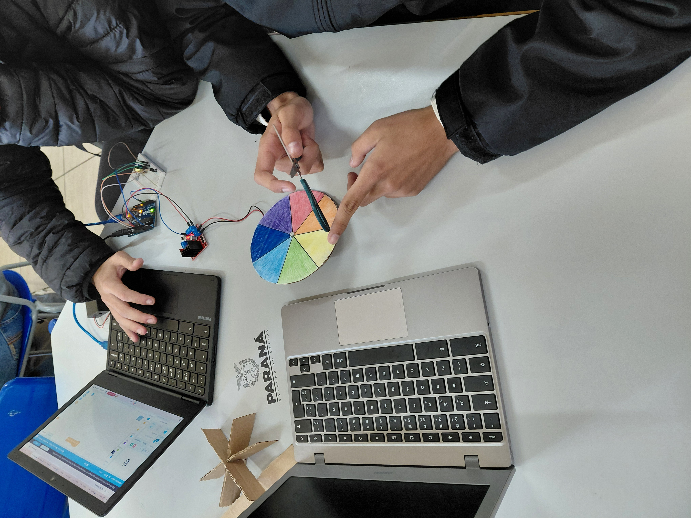
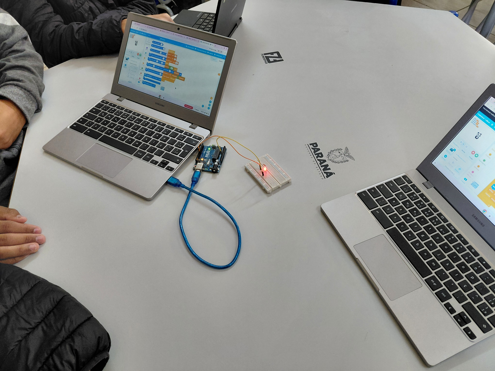

Projetos Desenvolvidos
'[texto]'
Projeto 1 - Divulgação Científica
Pessoas com miopia em sua visão passam por um aumento de seu grau durante muito tempo até que em uma certa idade o grau acaba se estabilizando e não sobe e nem desce mais.

Projeto 2 - Limites da Visão

Nesta aula fizemos uma história em quadrinhos sobre o processo de tudo o que é realizada para gerar a imagem em nossa visão mostrando o processo completo de como funciona.
Projeto 3 - Espelhos Planos

Os espelhos planos formam imagens virtuais, direitas e do mesmo tamanho do objeto. A imagem fica a mesma distancia atrás do espelho que o objeto está à frente, ocorre iversão lateral e o ângulo de reflexão.
Projeto 4 - Associação de Espelhos

A associação de espelhos acontece quando dois ou mais espelhos formam várias imagens de um objeto. A quantidade de imagens depende do ângulo entre os espelhos: quanto menor o ângulo, maior o números de imagens.
Projeto 5 - Espelhos Esféricos

Os espelhos esféricos têm superficíe curva e podem ser côncavos ou convexos cformam sempre imagens virtuais, enquanto os convexos formam sempre imagens virtuais, direitas e menores.
Projeto 6 - Reflexão da Luz

A reflexão da luz é o retorno da luz ao atingir uma superficíe. Ela pode ser regular ou difusa e obdece à lei de que o ângulo de incidencia é igual ao ângulo de reflexão.
Projeto 7 - Disco de newtom

Conceito:O Disco de Newton demonstra que a luz branca é formada pela mistura das cores do espectro visível. Quando o disco colorido gira rapidamente, as cores se combinam visualmente e parecem brancas.
Abordagem na acessibilidade:Na acessibilidade, o Disco de Newton pode ser adaptado para diferentes necessidades: usando texturas ou sons para pessoas com deficiência visual, símbolos para identificar as cores em casos de daltonismo e controle da velocidade de rotação para evitar desconforto em pessoas fotossensíveis.
Projeto 8 - fade-IN fade-OUT

Conceito:O fade é o efeito de aumentar e diminuir o brilho do LED gradualmente. Isso é feito com PWM, que liga e desliga o LED muito rapidamente, fazendo o olho perceber uma variação suave de brilho.
Abordagem na acessibilidade: O efeito fade melhora a acessibilidade ao evitar mudanças bruscas de luz, reduzindo riscos para pessoas com epilepsia fotossensível, diminuindo a sobrecarga sensorial em pessoas neurodivergentes e facilitando a adaptação da visão em pessoas com baixa visão e idosos.
Projeto 9 - LED-rgb

Conceito:O LED RGB combina as cores vermelho, verde e azul para criar milhões de cores, inclusive o branco. Essa tecnologia é usada em telas, painéis e semáforos.
Abordagem na acessibilidade:O controle das cores do LED RGB melhora a acessibilidade com alto contraste e modo escuro, filtros para daltonismo e alertas visuais para pessoas surdas.